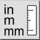
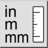
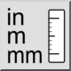
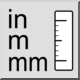

Tekening eenheid omzetten
Werkbalk / icoon:
 

Menu: Bewerken > Tekening eenheid omzetten
Sneltoets: C, U
Opdrachten: convertunit | cu
Dit is een automatische vertaling.
Werkbalk / icoon:
 

Menu: Bewerken > Tekening eenheid omzetten
Sneltoets: C, U
Opdrachten: convertunit | cu